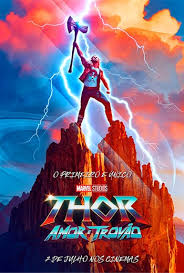
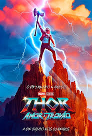
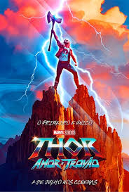
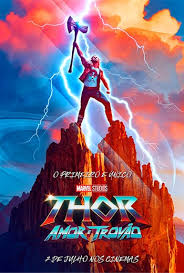

Não há como negar: as expectativas estão altíssimas para The Batman. E um dos principais motivos para isso é a aguardada performance de Robert Pattinson, que vem conquistando muitos defensores antes mesmo da estreia. Quem dirige o longa é Matt Reeves, cineasta por trás de títulos marcantes como Planeta dos Macacos: O Confronto e Cloverfield: Monstro. Recentemente, um trailer empolgante com destaque para a Mulher-Gato de Zoe Kravitz foi disponibilizado, aumentando ainda mais a ansiedade dos fãs.
Saiba mais
A cada dia que passa, Doutor Estranho no Multiverso da Loucura promete ser um dos melhores lançamentos do Universo Cinematográfico da Marvel. Começando pela direção: o longa é comandado por ninguém menos que Sam Raimi. Sim, a lenda por trás de clássicos como A Morte do Demônio e a trilogia Homem-Aranha com Tobey Maguire. E se você assistiu ao primeiro teaser da produção, já sabe que a psicodelia está elevada a potência máxima neste novo capítulo.
Saiba maisNatalie Portman voltando ao Universo Cinematográfico da Marvel, Christian Bale vivendo um vilão icônico dos quadrinhos… Como não ficar animado para conferir Thor: Love and Thunder? Ainda não há muitos detalhes sobre a nova empreitada de Taika Waititi, mas nós já sabemos que será um hino.
Saiba mais